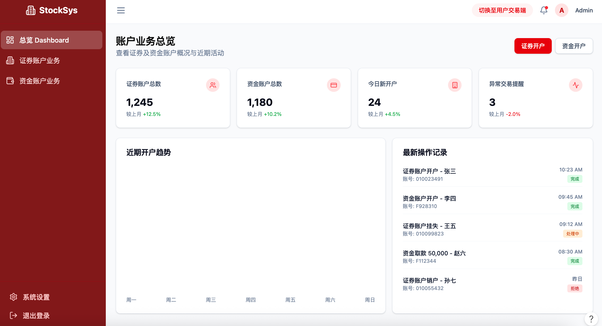
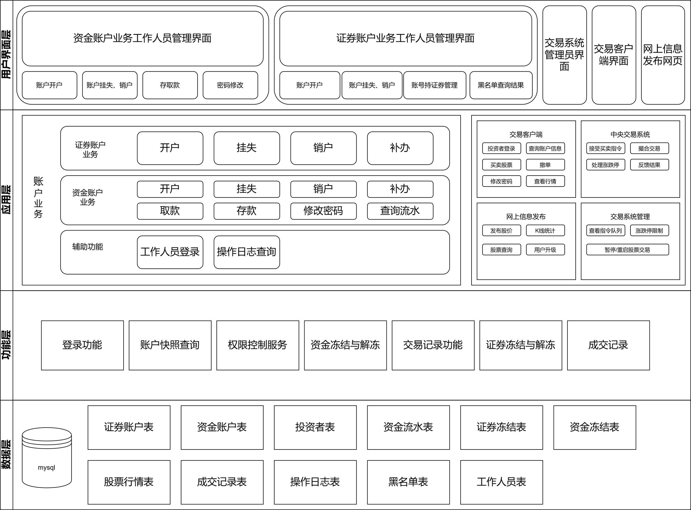
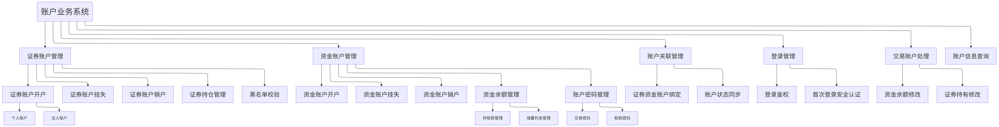
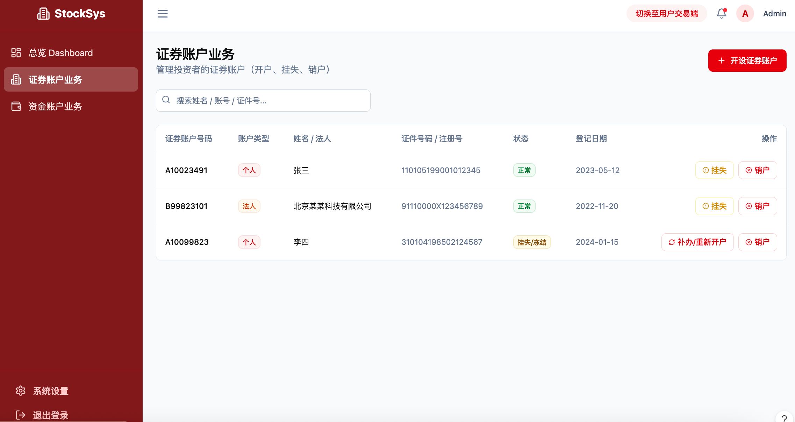
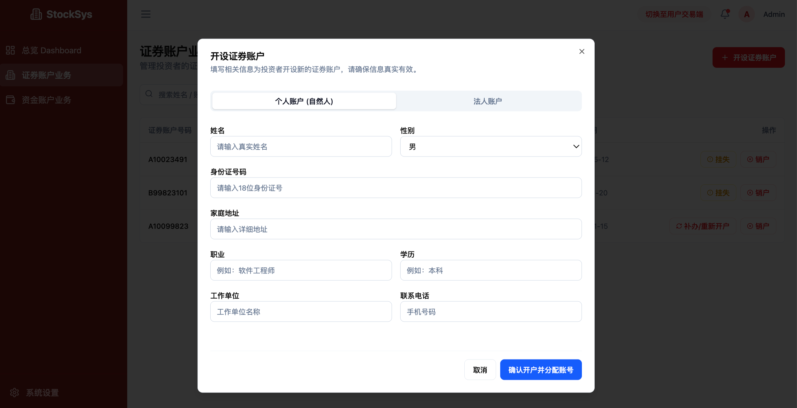
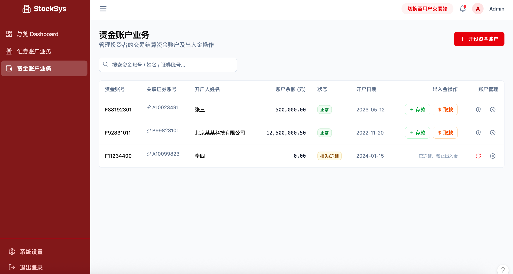
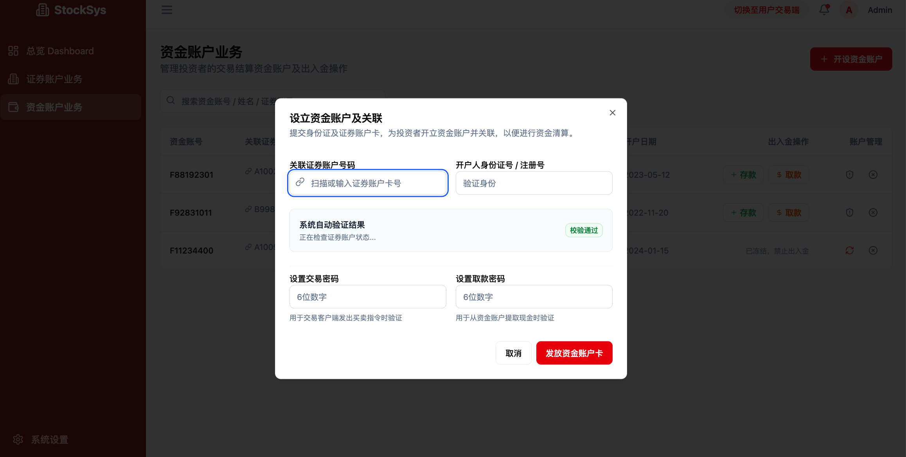
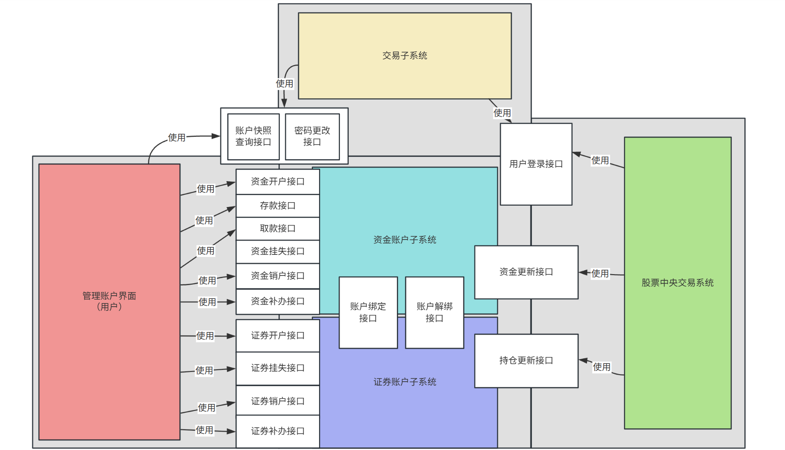
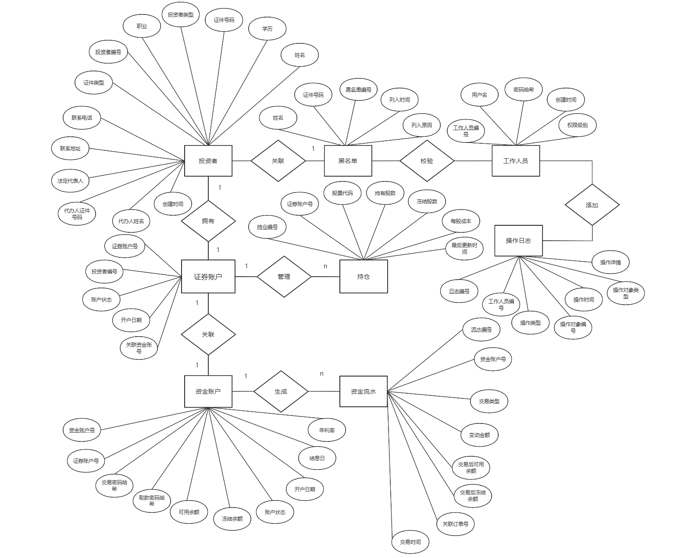

开户、挂失与重新开户、销户，维护投资者进入交易市场的账户通行证。
开户、密码、存取款、挂失、销户、资金查询，并与证券账户关联。
用户登录、查看资金与持仓、发出买卖指令。
保存委托、撮合交易、生成成交结果。
发布股票交易结果和查询信息。
管理员监控交易系统、审计指令和交易状态。






工作人员管理端办理柜台业务，投资者交易端查询资金和持仓。
封装证券账户、资金账户、状态同步、资金流水和持仓更新。
MySQL 保存投资者、账户、流水、持仓、黑名单和操作日志。
交易管理系统负责委托、成交、撤单结果回写与管理员风控操作。

createSecurityAccount、createFundAccount、挂失、补办、销户接口，支撑柜台核心业务。
bindSecurityAccount、unbindSecurityAccount、syncAccountStatus 保证证券账户和资金账户一致。
getFundSnapshot、getSecuritySnapshot、updateFundBalance、updateSecurityHolding 连接交易端和中央交易系统。
checkBlacklist、管理员冻结/解冻、queryOperationLog、settleAnnualInterest、maintainBlacklist 覆盖风控、日志和年度结息。
余额不足、持仓不足、账户冻结、身份不一致等错误不进入数据库变更阶段。
数据库写入失败或唯一键冲突时回滚事务，避免保留半完成状态。
交易管理系统超时或不可用时记录请求摘要，后续按账户号、订单号或流水号补偿。
密码连续错误、越权访问、伪造 token 和高频请求会被拒绝，并保留安全审计记录。

物理表围绕 8 张核心表展开：
正常、挂失冻结、违规冻结、预销户、已销户由账户状态管理统一控制，禁止重复冻结、重复销户。
买入冻结、买入扣款、卖出回款和撤单解冻都写入资金流水，并与持仓变更保持一致。
每年 6 月 30 日按可用余额和年利率计算利息，更新余额并生成“结息”资金流水。
开户、挂失、销户、修改密码、管理员查询和黑名单维护都写入操作日志。